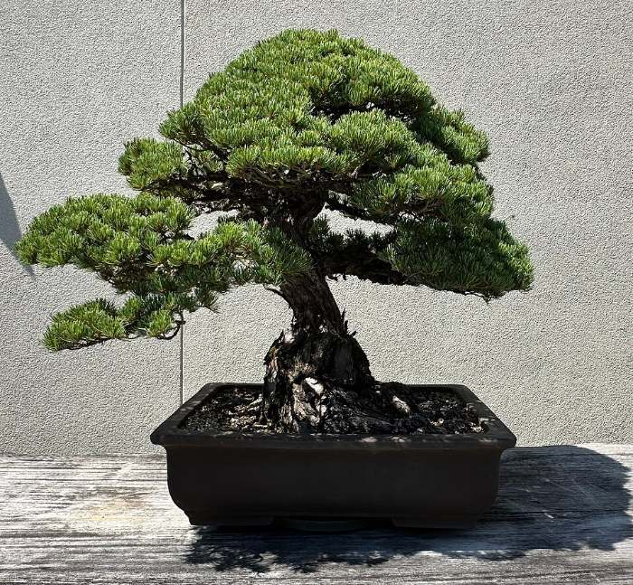

수피
+3장
+3장
이키본 코멘트
가늘게 올라간 줄기와 위쪽에 모인 가지가 문인목다운 나무예요. 2024년 봄에 마지막 분갈이를 했고, 내년 봄 위쪽 가지를 한 번 정리하면 더 가벼워 보일 거예요. 화분은 갈색 장방분(가로 24cm)이 함께 갑니다.
담당 장인 · 박○○ (경력 22년)
송백류 · 해송 (곰솔) · 문인목
문인목 해송
No. 2610-041 · 단 1그루 · 10월 14일 촬영
580,000원
부가세 포함 · 무료배송| 수종 | 해송(곰솔) · Pinus thunbergii |
|---|---|
| 수형 | 문인목 |
| 추정 수령 | 약 25년 |
| 수고 | 42cm 흙 표면부터 나무 꼭대기까지 |
| 수폭 | 36cm 정면에서 본 좌우 가지 끝 사이 |
| 목대 | 3.2cm 뿌리 바로 위 줄기 지름 |
| 근장 | 9cm 흙 위로 드러난 뿌리 펼침 너비 |
| 화분 | 갈색 장방분 · 가로 24cm (포함) |
| 햇빛·물 | 실외, 하루 5시간 이상 · 겉흙이 마르면 듬뿍 |
| 난이도 | 보통 |
함께 주문할 작업 선택 · 받기 전에 이키본 장인이 작업합니다
이 나무에 맞는 폭 22~30cm 화분 14종 중 선택 · 화분값 + 분갈이 공임 25,000원(중품)
지금(10월)은 분갈이 적기가 아니에요 · 임시 화분으로 먼저 받고 2~3월에 무료 시공, 또는 봄까지 보관 후 발송 중 선택
가지 방향을 잡아 보내드려요 · 송백류 중품 기준 · 작업 +7일 · 철사 제거 시기(약 8개월 후) 알림톡으로 안내
소품 30,000원중품 60,000원 ✓대품 120,000원~
+60,000원
이 나무 사진으로 사리가 생겼을 때 모습을 3가지로 보여드려요 · 마음에 드는 안을 고르면 장인이 나무 상태를 보고 견적과 기간을 먼저 알려드린 뒤 진행 · A 줄기 사리 80,000원 / B 정상 신 50,000원 / C 사리+신 120,000원 (예시가)
나무580,000원
철사걸이 (중품)60,000원
배송무료 · 10월 20일(월) 발송 예정
합계640,000원
- 나무가 흔들리지 않게 고정한 전용 박스로 보내드려요. 월·화요일 발송, 수·목 도착.
- 살아있는 식물이라 단순 변심 반품은 어려워요. 받은 날 상태가 사진과 다르면 당일 사진과 함께 연락 주세요 (7일 생존 보장).
- 작업(철사걸이·분갈이·사리)이 들어간 주문은 작업 시작 전까지 취소할 수 있어요.